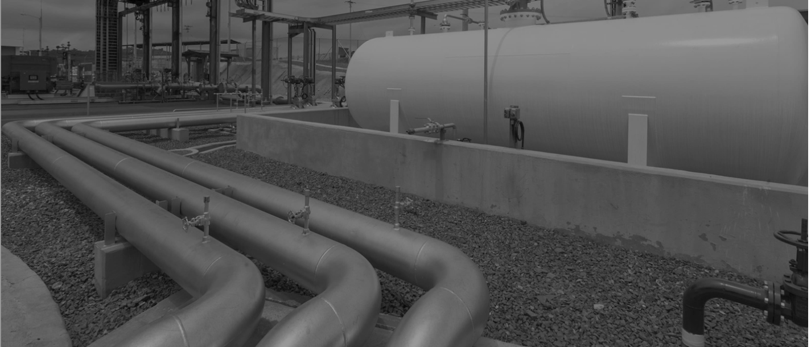

Programación y monitoreo de transporte en oleoductos y poliductos
Programación de inyecciones, cálculo de mezclas en ductos y tanques, monitoreo permanente de los crudos en la red de transporte.
Ver más
Planificación y gestión de terminales
Planificación de operaciones maximizando su ocupación y rentabilidad. Gestión integral incluyendo análisis de laboratorio y control de inventario.
Ver más
Diseño de red logística
Solución ágil y precisa para análisis estratégicos y estudio de escenarios logísticos de abastecimiento de la red. .
Ver más
Control de rondas de chequeos de planta
Garantiza el cumplimiento de rondas operativas de chequeo y mantenimiento facilitando el reporte de averías. .
Ver másProgramación logística de embarcaciones
Permite la programación eficiente de los productos transportados por barcos.
Ver más